River V7: calmer joined dry and wet channels
All28 latest native states directly reviewed;162 direct across preserved attempts. Joined detail4.5 provisional; bed4.6. Complete dry source A2 has visible red port fringes and fails4.4 independently.
V6 and prior failures · Individual written evaluations and hashes
Both inherited actual-input captures pass JSON restoration, arbitrary source-connected paths and single completion. Actor, full room, timed action, production and external acceptance remain open.
RIVER-JOIN-V7-1280-DRY_INITIAL · sampled state4.6/5
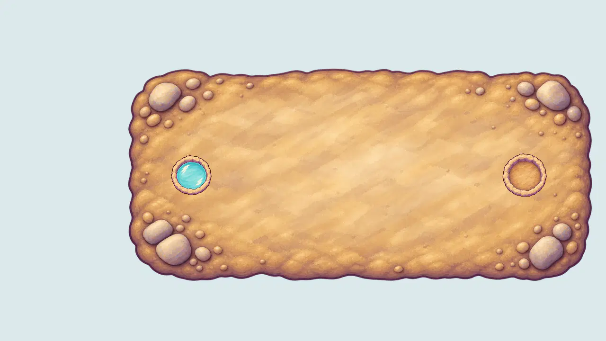
The complete painted top-down soil replaces the flat panel. Rounded plum contour, clustered edge stones, broad warm earth bands and clear aqua source match the painted family. Entire actual grid lies within the quiet soil centre at this width, with no bank, stone or viewport clipping. Isolated state4.6; no connected-network, actor, full room or timed-action acceptance.
843202921e24c3c4581d10f5fc6aba5a4045ca3e987e6caf8751c8cae5f4dc63RIVER-JOIN-V7-1280-ISOLATED_DRY · sampled state4.6/5

The complete painted top-down soil replaces the flat panel. Rounded plum contour, clustered edge stones, broad warm earth bands and clear aqua source match the painted family. Entire actual grid lies within the quiet soil centre at this width, with no bank, stone or viewport clipping. Isolated state4.6; no connected-network, actor, full room or timed-action acceptance.
743ed2af41111f02dee80f3e4ef3f65d68e97524e6e18b7d1385a53fc60a99ecRIVER-JOIN-V7-1280-ISOLATED_DRY_STRAIGHT · sampled state4.5/5
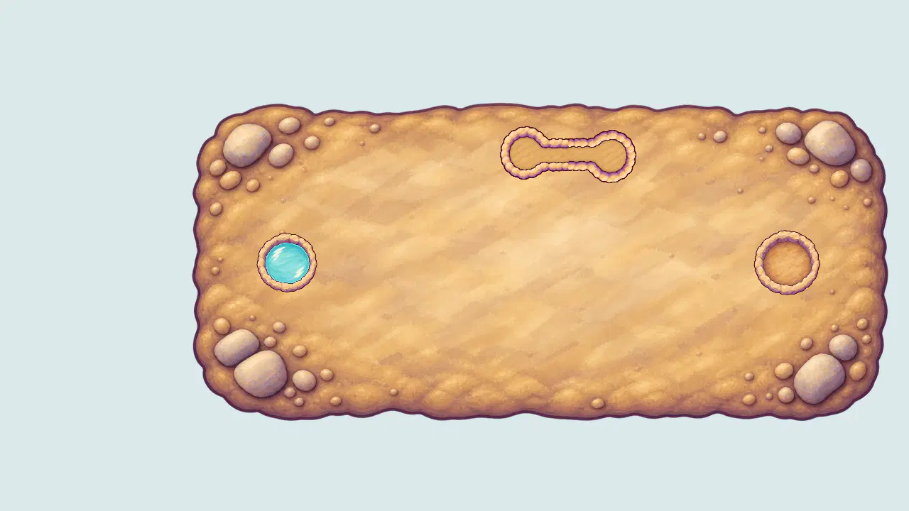
The dry recessed floor now stays calm golden ochre through rotated corners, T joins, cross and isolated loop. Heavy directional value planes are removed; small remaining bank-height and pigment steps keep joined detail at4.5 provisional. The full painted bed stays unclipped4.6. Whole-source A2 red port fringes remain a separate failed4.4 source review; the study trims open stubs to join planes without altering source pixels, and no red fringe is visible in these native states. No production, actor, room or complete-action acceptance.
1f991b55d14b1ac122f5af2f6f641732afe8b3c52a798aa20a419cec6743b679RIVER-JOIN-V7-1280-ISOLATED_DRY_CORNER · sampled state4.5/5
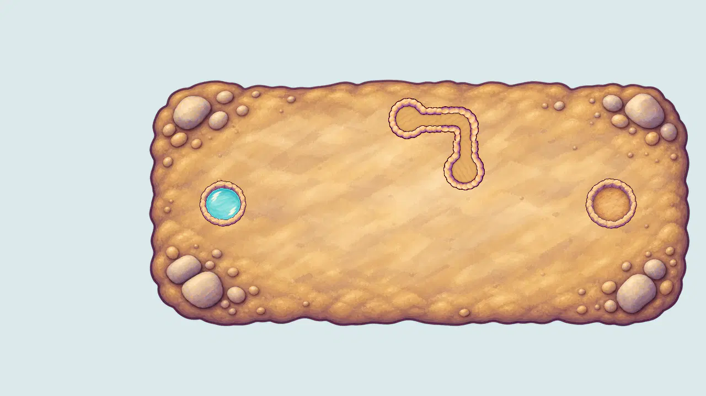
The dry recessed floor now stays calm golden ochre through rotated corners, T joins, cross and isolated loop. Heavy directional value planes are removed; small remaining bank-height and pigment steps keep joined detail at4.5 provisional. The full painted bed stays unclipped4.6. Whole-source A2 red port fringes remain a separate failed4.4 source review; the study trims open stubs to join planes without altering source pixels, and no red fringe is visible in these native states. No production, actor, room or complete-action acceptance.
700e08b0ff39fb0376b3eb7314fa603a7106e45997e76c1ddd421971e6838374RIVER-JOIN-V7-1280-ISOLATED_DRY_T · sampled state4.5/5
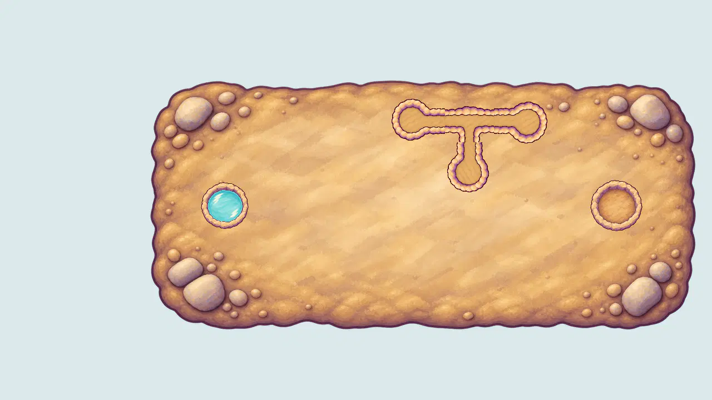
The dry recessed floor now stays calm golden ochre through rotated corners, T joins, cross and isolated loop. Heavy directional value planes are removed; small remaining bank-height and pigment steps keep joined detail at4.5 provisional. The full painted bed stays unclipped4.6. Whole-source A2 red port fringes remain a separate failed4.4 source review; the study trims open stubs to join planes without altering source pixels, and no red fringe is visible in these native states. No production, actor, room or complete-action acceptance.
0da2948a51a4bdcdf5b249a94ff92ecfbb65c111a5ca8197e8718114451c6c7dRIVER-JOIN-V7-1280-ISOLATED_DRY_CROSS · sampled state4.5/5
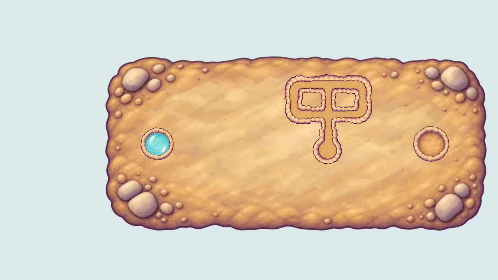
The dry recessed floor now stays calm golden ochre through rotated corners, T joins, cross and isolated loop. Heavy directional value planes are removed; small remaining bank-height and pigment steps keep joined detail at4.5 provisional. The full painted bed stays unclipped4.6. Whole-source A2 red port fringes remain a separate failed4.4 source review; the study trims open stubs to join planes without altering source pixels, and no red fringe is visible in these native states. No production, actor, room or complete-action acceptance.
d88ba014e4d78f7378c9abb4613b60696a47ebefb33d7988c190ef764c84739bRIVER-JOIN-V7-1280-CONNECTED_STRAIGHT · sampled state4.5/5
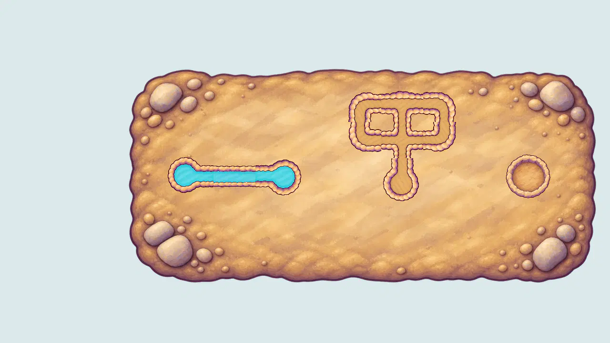
The dry recessed floor now stays calm golden ochre through rotated corners, T joins, cross and isolated loop. Heavy directional value planes are removed; small remaining bank-height and pigment steps keep joined detail at4.5 provisional. Both simultaneous dry loop and wet network now reach sampled4.5 provisional. The full painted bed stays unclipped4.6. Whole-source A2 red port fringes remain a separate failed4.4 source review; the study trims open stubs to join planes without altering source pixels, and no red fringe is visible in these native states. No production, actor, room or complete-action acceptance.
80359a4b8b86d5969844bb5ba62125b242339f935afed5c55fce7698fcbfb470RIVER-JOIN-V7-1280-CONNECTED_CORNER · sampled state4.5/5
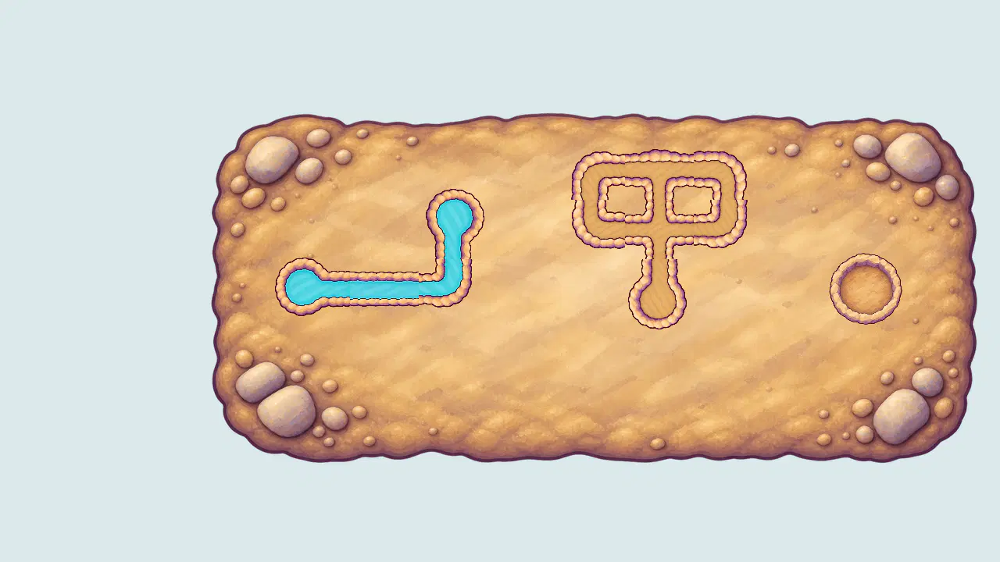
The dry recessed floor now stays calm golden ochre through rotated corners, T joins, cross and isolated loop. Heavy directional value planes are removed; small remaining bank-height and pigment steps keep joined detail at4.5 provisional. Both simultaneous dry loop and wet network now reach sampled4.5 provisional. The full painted bed stays unclipped4.6. Whole-source A2 red port fringes remain a separate failed4.4 source review; the study trims open stubs to join planes without altering source pixels, and no red fringe is visible in these native states. No production, actor, room or complete-action acceptance.
51af9b647dee2206c1e7c05f5041870774a922fd1c1be580528cfcfca47d75c9RIVER-JOIN-V7-1280-CONNECTED_T_BRANCH · sampled state4.5/5
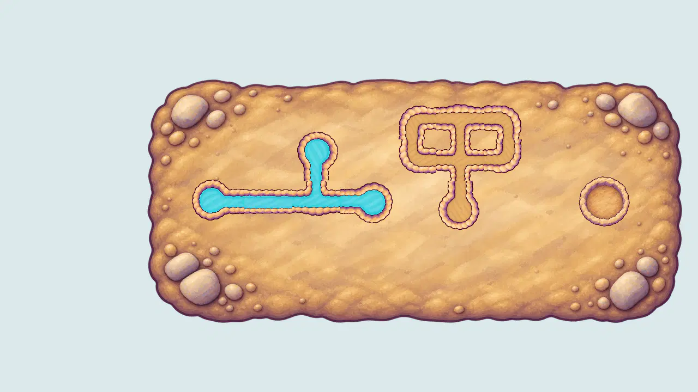
The dry recessed floor now stays calm golden ochre through rotated corners, T joins, cross and isolated loop. Heavy directional value planes are removed; small remaining bank-height and pigment steps keep joined detail at4.5 provisional. Both simultaneous dry loop and wet network now reach sampled4.5 provisional. The full painted bed stays unclipped4.6. Whole-source A2 red port fringes remain a separate failed4.4 source review; the study trims open stubs to join planes without altering source pixels, and no red fringe is visible in these native states. No production, actor, room or complete-action acceptance.
99f4d09bcc969e9dafee3e71e60d557adfa0a006d510bd079d62d69b53fbaf00RIVER-JOIN-V7-1280-CONNECTED_CROSS · sampled state4.5/5

The dry recessed floor now stays calm golden ochre through rotated corners, T joins, cross and isolated loop. Heavy directional value planes are removed; small remaining bank-height and pigment steps keep joined detail at4.5 provisional. Both simultaneous dry loop and wet network now reach sampled4.5 provisional. The full painted bed stays unclipped4.6. Whole-source A2 red port fringes remain a separate failed4.4 source review; the study trims open stubs to join planes without altering source pixels, and no red fringe is visible in these native states. No production, actor, room or complete-action acceptance.
58ed3bc2404024e7ad5c6edcc8bf3775a41aa8321214f39043c76dbded5daec8RIVER-JOIN-V7-1280-PARTIAL_JSON_RESTORED · sampled state4.5/5
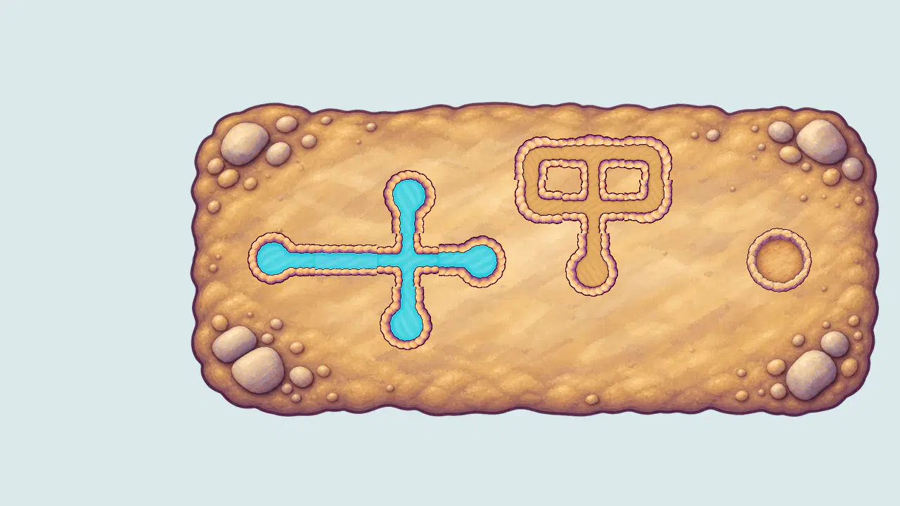
The dry recessed floor now stays calm golden ochre through rotated corners, T joins, cross and isolated loop. Heavy directional value planes are removed; small remaining bank-height and pigment steps keep joined detail at4.5 provisional. Both simultaneous dry loop and wet network now reach sampled4.5 provisional. The full painted bed stays unclipped4.6. Whole-source A2 red port fringes remain a separate failed4.4 source review; the study trims open stubs to join planes without altering source pixels, and no red fringe is visible in these native states. No production, actor, room or complete-action acceptance.
58ed3bc2404024e7ad5c6edcc8bf3775a41aa8321214f39043c76dbded5daec8RIVER-JOIN-V7-1280-FORMERLY_ISOLATED_NOW_WET · sampled state4.5/5
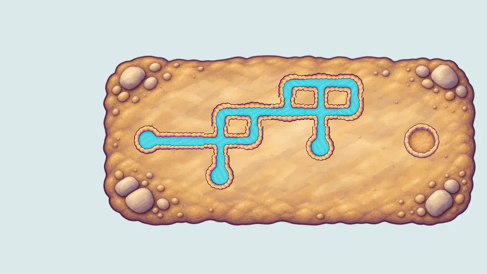
Calm painted aqua stays continuous through arbitrary branches and loop connections; small bank-height and pigment steps keep joined wet detail at4.5 provisional. The full painted bed stays unclipped4.6. Whole-source A2 red port fringes remain a separate failed4.4 source review; the study trims open stubs to join planes without altering source pixels, and no red fringe is visible in these native states. No production, actor, room or complete-action acceptance.
497ad56c5013e631db6ce79132731e917ea8acd681a9e4a5cf57622a417fb10dRIVER-JOIN-V7-1280-CONNECTED_COMPLETE · sampled state4.5/5
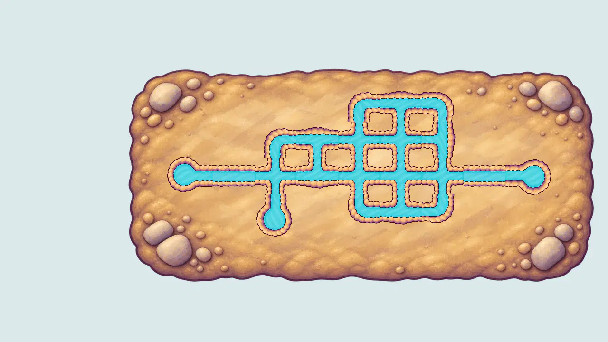
Calm painted aqua stays continuous through arbitrary branches and loop connections; small bank-height and pigment steps keep joined wet detail at4.5 provisional. The full painted bed stays unclipped4.6. Whole-source A2 red port fringes remain a separate failed4.4 source review; the study trims open stubs to join planes without altering source pixels, and no red fringe is visible in these native states. No production, actor, room or complete-action acceptance.
785e400ecc04b0fa0d7708c2f482fb8eb96cbbae8221b731262dbb7c3e0bf70cRIVER-JOIN-V7-1280-QUIET_SINGLE_COMPLETION · sampled state4.5/5

Calm painted aqua stays continuous through arbitrary branches and loop connections; small bank-height and pigment steps keep joined wet detail at4.5 provisional. The full painted bed stays unclipped4.6. Whole-source A2 red port fringes remain a separate failed4.4 source review; the study trims open stubs to join planes without altering source pixels, and no red fringe is visible in these native states. No production, actor, room or complete-action acceptance.
981b13eab5500a1e975244875fac6a78a2799ad51a472ca40a8dbf20912a2eb2RIVER-JOIN-V7-1600-DRY_INITIAL · sampled state4.6/5

The complete painted top-down soil replaces the flat panel. Rounded plum contour, clustered edge stones, broad warm earth bands and clear aqua source match the painted family. Entire actual grid lies within the quiet soil centre at this width, with no bank, stone or viewport clipping. Isolated state4.6; no connected-network, actor, full room or timed-action acceptance.
a3be0812ff8c3eb4a3049d52a737d3283109f1ea20f2deafdb5fa416d689efc6RIVER-JOIN-V7-1600-ISOLATED_DRY · sampled state4.6/5
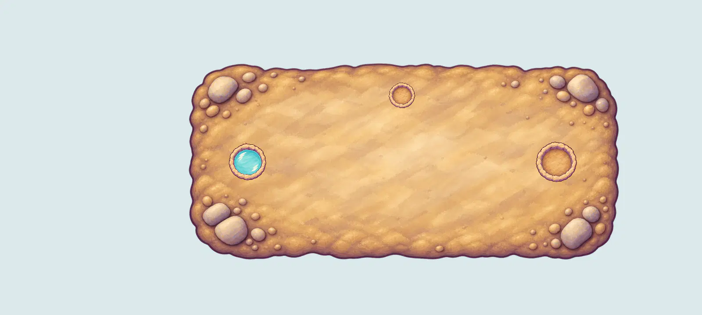
The complete painted top-down soil replaces the flat panel. Rounded plum contour, clustered edge stones, broad warm earth bands and clear aqua source match the painted family. Entire actual grid lies within the quiet soil centre at this width, with no bank, stone or viewport clipping. Isolated state4.6; no connected-network, actor, full room or timed-action acceptance.
bb2eb778417ece52c88e5a6c6d03b8f29d5eeccaf129b65f522a2379973d642bRIVER-JOIN-V7-1600-ISOLATED_DRY_STRAIGHT · sampled state4.5/5
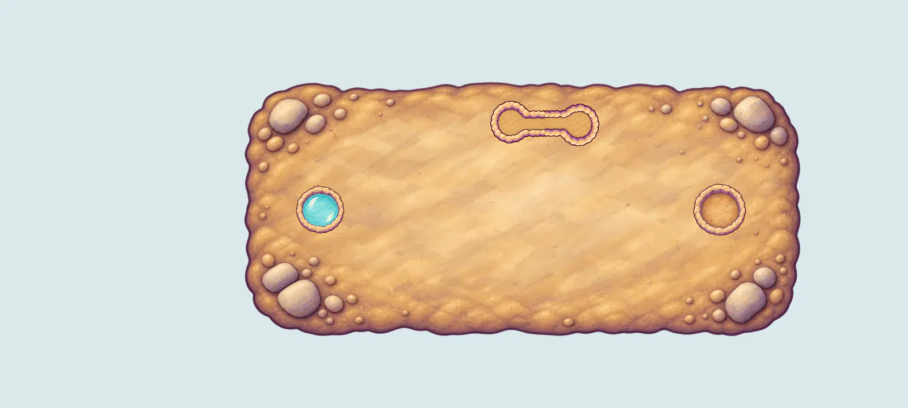
The dry recessed floor now stays calm golden ochre through rotated corners, T joins, cross and isolated loop. Heavy directional value planes are removed; small remaining bank-height and pigment steps keep joined detail at4.5 provisional. The full painted bed stays unclipped4.6. Whole-source A2 red port fringes remain a separate failed4.4 source review; the study trims open stubs to join planes without altering source pixels, and no red fringe is visible in these native states. No production, actor, room or complete-action acceptance.
49d02ff2e24f4aa33652fab5d5a38b6d6169f812076a365cff7fb39754efefbcRIVER-JOIN-V7-1600-ISOLATED_DRY_CORNER · sampled state4.5/5
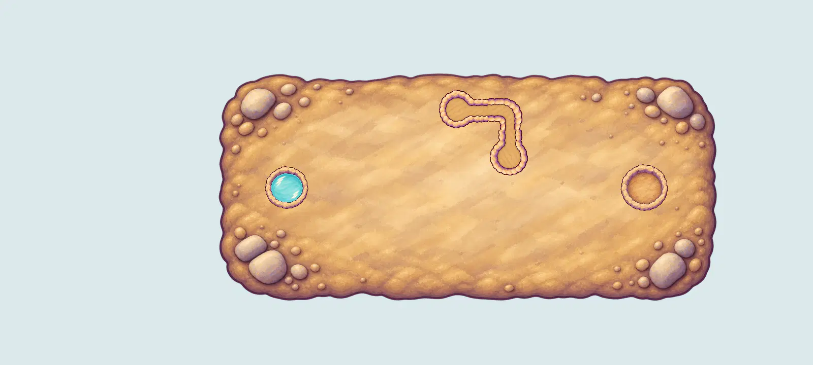
The dry recessed floor now stays calm golden ochre through rotated corners, T joins, cross and isolated loop. Heavy directional value planes are removed; small remaining bank-height and pigment steps keep joined detail at4.5 provisional. The full painted bed stays unclipped4.6. Whole-source A2 red port fringes remain a separate failed4.4 source review; the study trims open stubs to join planes without altering source pixels, and no red fringe is visible in these native states. No production, actor, room or complete-action acceptance.
73429674c203717cc2a7494ab553092ad27a5d6398618a6a9031e3627da2024aRIVER-JOIN-V7-1600-ISOLATED_DRY_T · sampled state4.5/5
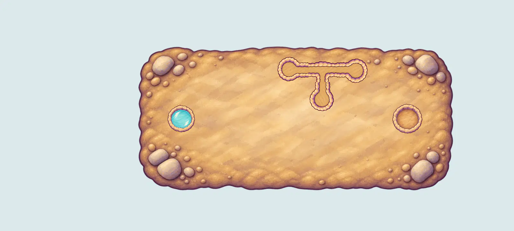
The dry recessed floor now stays calm golden ochre through rotated corners, T joins, cross and isolated loop. Heavy directional value planes are removed; small remaining bank-height and pigment steps keep joined detail at4.5 provisional. The full painted bed stays unclipped4.6. Whole-source A2 red port fringes remain a separate failed4.4 source review; the study trims open stubs to join planes without altering source pixels, and no red fringe is visible in these native states. No production, actor, room or complete-action acceptance.
91c075d9e3c20b1d3864de22b08db7a67de4fda07067793cf5fbf4368b9e539dRIVER-JOIN-V7-1600-ISOLATED_DRY_CROSS · sampled state4.5/5
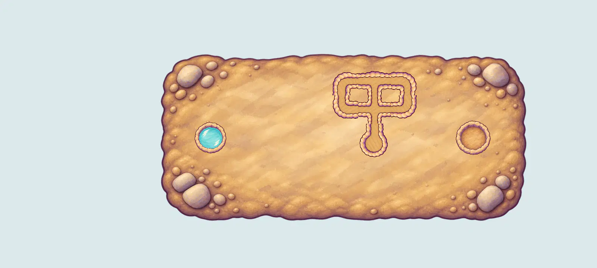
The dry recessed floor now stays calm golden ochre through rotated corners, T joins, cross and isolated loop. Heavy directional value planes are removed; small remaining bank-height and pigment steps keep joined detail at4.5 provisional. The full painted bed stays unclipped4.6. Whole-source A2 red port fringes remain a separate failed4.4 source review; the study trims open stubs to join planes without altering source pixels, and no red fringe is visible in these native states. No production, actor, room or complete-action acceptance.
45b8075140350c710a2e248c62db993ebb824904de5082747e0ed3e20cd4050bRIVER-JOIN-V7-1600-CONNECTED_STRAIGHT · sampled state4.5/5
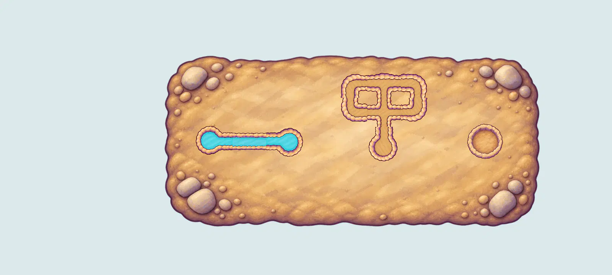
The dry recessed floor now stays calm golden ochre through rotated corners, T joins, cross and isolated loop. Heavy directional value planes are removed; small remaining bank-height and pigment steps keep joined detail at4.5 provisional. Both simultaneous dry loop and wet network now reach sampled4.5 provisional. The full painted bed stays unclipped4.6. Whole-source A2 red port fringes remain a separate failed4.4 source review; the study trims open stubs to join planes without altering source pixels, and no red fringe is visible in these native states. No production, actor, room or complete-action acceptance.
589eb93389271c0697d85d39f338b8d0e1f8b368a937406dd85a9df7e42ad2aaRIVER-JOIN-V7-1600-CONNECTED_CORNER · sampled state4.5/5
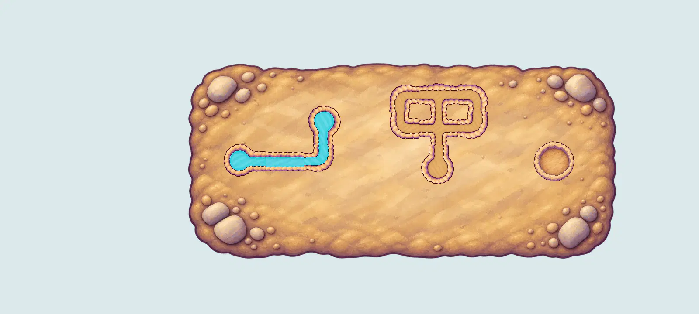
The dry recessed floor now stays calm golden ochre through rotated corners, T joins, cross and isolated loop. Heavy directional value planes are removed; small remaining bank-height and pigment steps keep joined detail at4.5 provisional. Both simultaneous dry loop and wet network now reach sampled4.5 provisional. The full painted bed stays unclipped4.6. Whole-source A2 red port fringes remain a separate failed4.4 source review; the study trims open stubs to join planes without altering source pixels, and no red fringe is visible in these native states. No production, actor, room or complete-action acceptance.
c077e6ea6e386e780f40f2b56f651017f5b25a6fa8a41647aa0bda5a27afb910RIVER-JOIN-V7-1600-CONNECTED_T_BRANCH · sampled state4.5/5
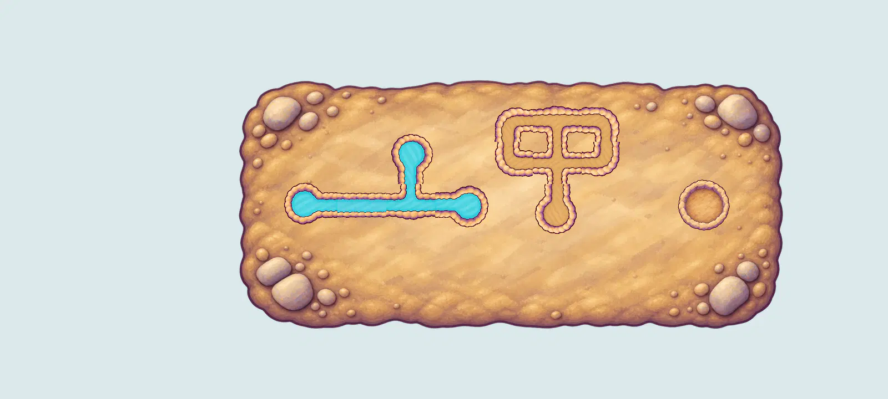
The dry recessed floor now stays calm golden ochre through rotated corners, T joins, cross and isolated loop. Heavy directional value planes are removed; small remaining bank-height and pigment steps keep joined detail at4.5 provisional. Both simultaneous dry loop and wet network now reach sampled4.5 provisional. The full painted bed stays unclipped4.6. Whole-source A2 red port fringes remain a separate failed4.4 source review; the study trims open stubs to join planes without altering source pixels, and no red fringe is visible in these native states. No production, actor, room or complete-action acceptance.
2894786b09e05a4bb89a3eeb312fa3947649cc507e4494ecd25e039ea0e39592RIVER-JOIN-V7-1600-CONNECTED_CROSS · sampled state4.5/5
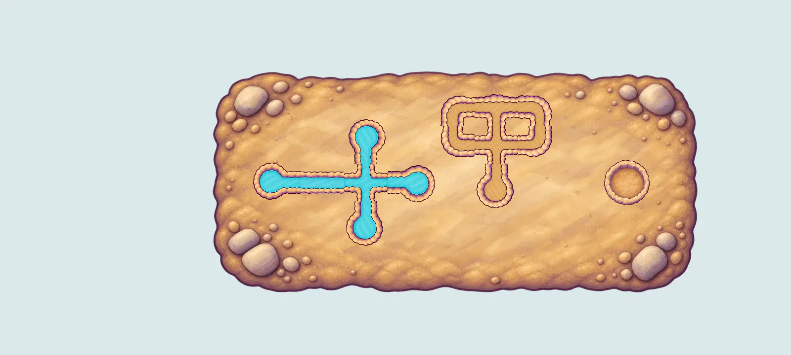
The dry recessed floor now stays calm golden ochre through rotated corners, T joins, cross and isolated loop. Heavy directional value planes are removed; small remaining bank-height and pigment steps keep joined detail at4.5 provisional. Both simultaneous dry loop and wet network now reach sampled4.5 provisional. The full painted bed stays unclipped4.6. Whole-source A2 red port fringes remain a separate failed4.4 source review; the study trims open stubs to join planes without altering source pixels, and no red fringe is visible in these native states. No production, actor, room or complete-action acceptance.
9505a5e97e8fc45ac489a10198f40518fb45f1f51c79e384724845b57173612dRIVER-JOIN-V7-1600-PARTIAL_JSON_RESTORED · sampled state4.5/5

The dry recessed floor now stays calm golden ochre through rotated corners, T joins, cross and isolated loop. Heavy directional value planes are removed; small remaining bank-height and pigment steps keep joined detail at4.5 provisional. Both simultaneous dry loop and wet network now reach sampled4.5 provisional. The full painted bed stays unclipped4.6. Whole-source A2 red port fringes remain a separate failed4.4 source review; the study trims open stubs to join planes without altering source pixels, and no red fringe is visible in these native states. No production, actor, room or complete-action acceptance.
9505a5e97e8fc45ac489a10198f40518fb45f1f51c79e384724845b57173612dRIVER-JOIN-V7-1600-FORMERLY_ISOLATED_NOW_WET · sampled state4.5/5
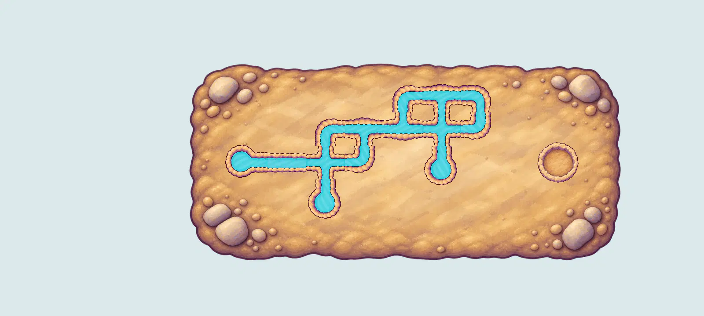
Calm painted aqua stays continuous through arbitrary branches and loop connections; small bank-height and pigment steps keep joined wet detail at4.5 provisional. The full painted bed stays unclipped4.6. Whole-source A2 red port fringes remain a separate failed4.4 source review; the study trims open stubs to join planes without altering source pixels, and no red fringe is visible in these native states. No production, actor, room or complete-action acceptance.
14e18e9513c623e37dfae3b008153013a4974718f12c330945257cad69141c45RIVER-JOIN-V7-1600-CONNECTED_COMPLETE · sampled state4.5/5

Calm painted aqua stays continuous through arbitrary branches and loop connections; small bank-height and pigment steps keep joined wet detail at4.5 provisional. The full painted bed stays unclipped4.6. Whole-source A2 red port fringes remain a separate failed4.4 source review; the study trims open stubs to join planes without altering source pixels, and no red fringe is visible in these native states. No production, actor, room or complete-action acceptance.
5f8fa04634cbf9fc01698158db2f61dc2da1c16fc73a9a8e79bf55d5fd07bd71RIVER-JOIN-V7-1600-QUIET_SINGLE_COMPLETION · sampled state4.5/5
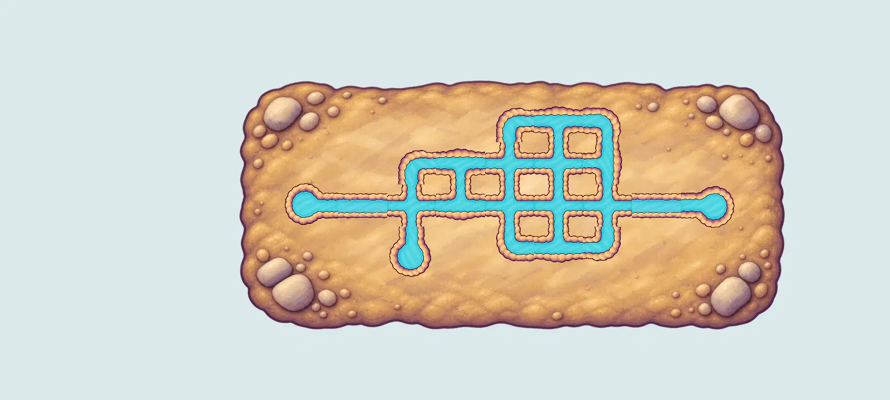
Calm painted aqua stays continuous through arbitrary branches and loop connections; small bank-height and pigment steps keep joined wet detail at4.5 provisional. The full painted bed stays unclipped4.6. Whole-source A2 red port fringes remain a separate failed4.4 source review; the study trims open stubs to join planes without altering source pixels, and no red fringe is visible in these native states. No production, actor, room or complete-action acceptance.
b43a4f783b924fddd91718365a5018493824ae24aebfd1bd3815bf31d234e4ac